We are finally in a position to prove that the solution
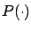
of the RDE (6.14), propagated backward in time from the terminal condition (6.11), exists for all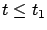
. It follows from the standard theory of local existence and uniqueness of solutions to ordinary differential equations that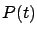
exists for![[*]](crossref.gif) .) As for global existence, the problem is that some entry of
.) As for global existence, the problem is that some entry of 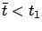
and some indices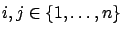
such that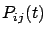
approaches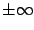
as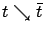
. Such behavior is actually quite typical for solutions of quadratic differential equations of Riccati type, as we discussed in detail on page. In the context of the formula (6.10), this would mean that the matrix
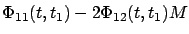
becomes singular at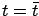
. Similarly, in the context of the formula (6.15) the finite escape would mean that the matrix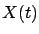
becomes singular at . In Section 2.6.2, we encountered a closely related situation and formalized it in terms of existence of conjugate points. Fortunately, in the present setting it is not very difficult to show by a direct argument that all entries of remain bounded for all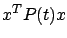
is the optimal LQR cost-to-go from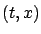
.Seeking a contradiction, suppose that there is a such that exists on the interval
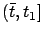
but some entry of becomes unbounded as . We know from Exercise 6.2 that for all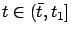
the matrix is symmetric and positive semidefinite, hence all its principal minors must be nonnegative. If an off-diagonal entry becomes unbounded as while all diagonal entries stay bounded, then a certain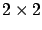
principal minor of must be negative for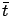
; namely, this is the determinant of the matrix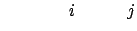 |
||
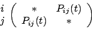 |
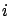
-th and the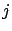
-th row and column of . Thus this scenario is ruled out, and the only remaining possibility is that a diagonal entry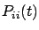
becomes unbounded as . Consider the vector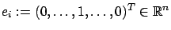
, with 1 in the -th position and zeros everywhere else; then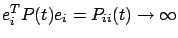
as . Suppose that the system is in state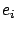
at some time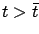
. We know that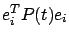
is the optimal cost-to-go from there, and so this cost must be unbounded as we take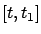
. The state trajectory corresponding to this control is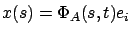
for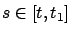
, where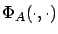
is the transition matrix for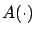
, and the associated cost is
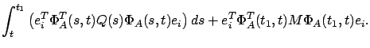
It is quite clear that this cost remains bounded as
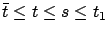
. The resulting contradiction proves that a finite escape time cannot exist.The existence of the solution to the RDE (6.14) on the interval
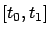
is now established. Thus we can be sure that the optimal control (6.12) is well defined, and the finite-horizon LQR problem has been completely solved. We must be able to explicitly solve the RDE, though, if we want to obtain a closed-form expression for the optimal control law.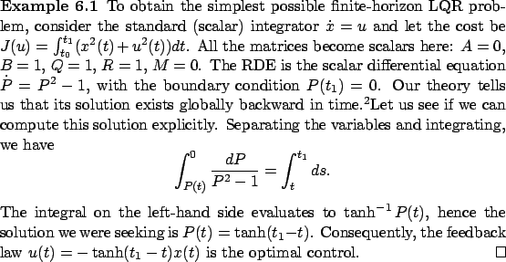
6.2If analytically solving the RDE is not a completely trivial task even for such an elementary example, we expect closed-form solutions to be obtainable only in very special cases. Yet, the LQR problem is much more tractable compared to the general optimal control problem studied in Chapter 5. The main simplification is that instead of trying to solve the HJB equation which is a partial differential equation, we now have to solve the RDE which is an ordinary differential equation, and this can be done efficiently by standard numerical methods. In the next section, we define and study a variant of the LQR problem which lends itself to an even simpler solution; this development will be in line with what we already saw, in a more general context but in much less detail, towards the end of Section 5.1.3.